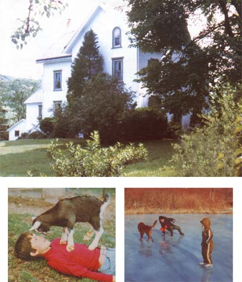

PHOTOS BY THE AUTHOR
ABOVE: It took nearly two years to locate our dream house, ""Serenity"". BELOW LEFT: Our son and his goat, Heidi, see eye to eye. BELOW RIGHT: Skating on a neighbor's pond keeps our boys hardy and happy (and away from the TV set!).